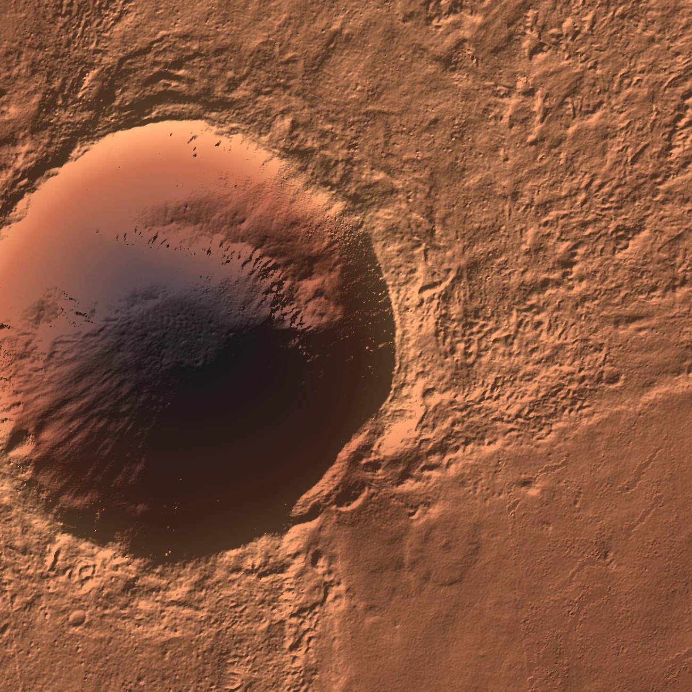
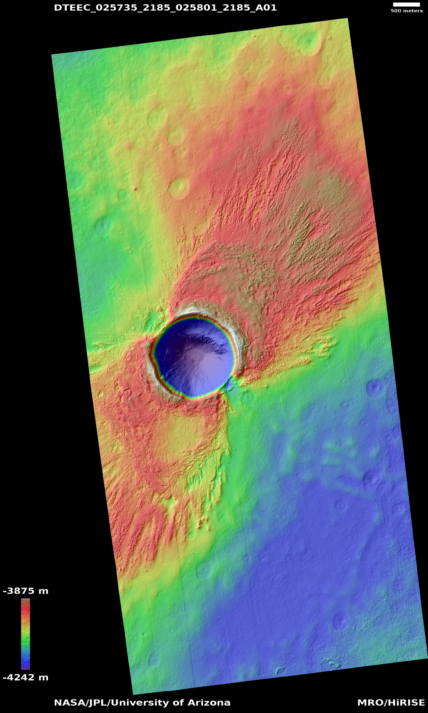
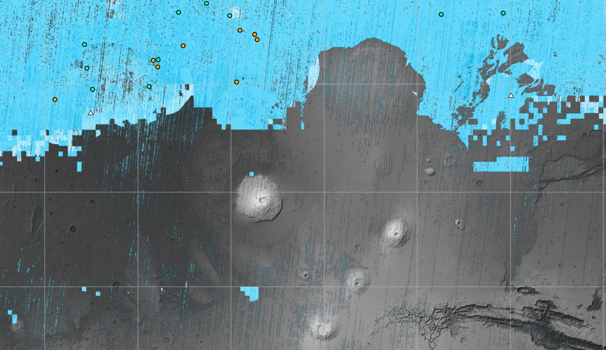

▲ NHiRISE DTM / DTEEC_025735_2185 · 資源と施設はゲーム上の配置
▶ あなた / アレス◆ ライバル / ベガ観測画像上の施設・資源はゲーム用の仮定
INVENTION TREE
火星で、文明を発明する
研究を進め、地図で採取し、本拠地で装置を作ろう。学習はいつでも任意。
NASA OBSERVATION / SOURCE本物の火星を読む。
観測とゲームの推定を区別して、候補地を選ぶ。

Arcadia Planitiaの約2.6 km四方。HiRISEの実測標高を着色・強調して描いた盤面です。各マスは約237 m。資源、基地、通行制限はゲーム上の仮定です。
位置：北緯38.1276〜38.1717°、東経191.5567〜191.6106°。北が上。
HiRISE DTMと原観測 ↗
HiRISE公開の標高図。こちらはクレーター周辺を広く示す原資料で、盤面はその一部です。
全域の観測情報 ↗
SWIMは広域で地下氷の候補を示します。この盤面の小さなマスに氷がある証拠ではなく、採取量も分からないため、探査で得る結果はゲーム上の推定です。
NASAの説明 ↗地形：NASA/JPL-Caltech/UArizona · SWIM：NASA/JPL-Caltech/Planetary Science Institute
詳細：地図の出典と加工